Clothing in the Scottish Highlands, 1600 - 1800 CE
- Home
- Hallstat and La Téne Celts
- Ireland, 5th - 10th c. CE
-- Hair, Jewelry, etc. (Classical Celts and pre-medieval Ireland) - Late Medieval Ireland
- Medieval Scotland, 1100-1600
- Scotland, 1600-1800
-- Assembling a Basic 18th c. Woman's Outfit - Dyes
- Fiber Working Techniques
- Celtic Costume Myths and Tips
- Patterns and Resources
- Bibliography
- Recommended Reading
- Other links
This is not to say that clothing in the Scottish Highlands was completely unique and separate from that worn in the Lowlands or in England -- you can certainly see that elements of clothing common throughout Europe made their way into the Highlands too, particularly in the styles of men's jackets. However, some items that were used throughout Europe (for instance, the ballock knife and the sporran, which is basically a medieval belt-pouch like that found in 16th century paintings by Breughel and others) had a much longer lifespan in this remote area of the British Isles.
Basic elements of men's Scottish costume still include the Leine (a shirt like that worn in the rest of Europe at this time, which did NOT lace up the front in fantasy pirate shirt fashion), the Plaid (previously might have been called a 'brat', or cloak; this word has changed in modern Gaelic to mean a rug or carpet), Trews, a jacket, and shoes. They also wore knee-breeches like the ones worn in the Lowlands or in England. Women are not well-portrayed in Scottish art until the end of the 1700s, but it should be assumed based on what little evidence there is that they were wearing what most country women were wearing in the British Isles: a shift (also called a 'sark' -- the term 'chemise' isn't used for this basic undergarment until the 1800s) similar in cut and construction to those worn in the rest of the British Isles, several petticoats (skirts), the arisaidh (woman's form of the plaid), stays, and a jacket or bedgown, as well as a head-covering known as a kertch if she were married.
The Plaid:
Note: the term plaid (pronounced 'playd') here means a blanket or cloak, not the pattern of the material; it can refer to cloth that is white or striped as well as the usual checked cloth. Tartan is the term used for the checked pattern itself.
The plaid is described as being 12 to 18 feet long by about 5 feet wide, being made of two strips of cloth about 30" wide sewn together lengthwise. (McClintock, Old Highland Dress, p. 19) For modern purposes, this means that you only need to get 4 to 6 yards of 60" wide material -- I recommend not more than 4 yards unless you are very tall, as more than that tends to be too bulky/weighty to conveniently carry around at events. Those who could afford to do so wore colorful tartans, whereas the poorer folk wore browns and so on, the better to blend with the vegetation. (This is not, however, due to a lack of access to colorful dyes, which were, and are, quite plentiful and readily available throughout Scotland.) White, striped and single-color plaids were also common. In earlier periods, sheep and goat skins seem also to have been worn as mantles, both with and without the hair still attached.
Clan tartans are a relatively recent innovation, due to renewed interest in Scottish heritage in the early 1800s, when the laws against the wearing of kilts and tartans were lifted. People most likely wore a pattern of tartan common to the district they lived in (weavers had their favorite patterns in different areas), and could therefore be identified as being from that area if they travelled outside their district. Some very complex tartans are shown in the portraits of Scottish lords that date from the 1600s. Often the portraits show that the clothing was not all made up of the same tartan -- various pieces of clothing were woven with different 'setts' (tartan patterns), with an effect that looks to the modern eye rather like a bad golfing outfit.
There is a description of Scottish soldiers from the Hebrides in Ireland (fighting for Red Hugh O'Donnell in 1594) that makes clear that they had sufficiently different appearance from the Irish soldiers that an observer could tell them apart. They are described as wearing their belts over their mantles, which sounds to me like a description of the belted plaid -- the first kilt:
"They [the Scottish soliders] were recognized among the Irish Soldiers by the distinction of their arms and clothing, their habits and language, for their exterior dress was mottled cloaks of many colours (breacbhrait ioldathacha) with a fringe to their shins and calves, their belts over their loins outside their cloaks. Many of them had swords with hafts of horn, large and warlike, over their shoulders. It was necessary for the soldier to grip the very haft of his sword with both hands when he would strike a blow with it. Others of them had bows of carved wood strong for use, with well-seasoned strings of hemp, and arrows sharp-pointed whizzing in flight." (Quoted in McClintock, Old Highland Dress, p. 18: The Life of Aodh Ruadh O Domhnaill transcribed from the book of Lughaid O'Cleirigh. Irish Texts Society's publications, vol. XLII. Part I. Page 73.)
There isn't any credible documentation of a kilt any earlier than this, however. The belted plaid may have been in use for some time in the Highlands before this mention, but it is a rather unique garment and certainly would have been remarked on by outside observers if it were common and widespread.
The plaid (usually unbelted) was also worn with trews, and can be seen in portraits worn wrapped over one shoulder and under the opposite arm.
Note: The bottom part of the belted plaid should NOT cover the knees; when properly worn, it should hang just long enough to graze the back of the calf when the wearer is kneeling.
Plaids are generally pinned at the shoulder with an iron pin or bodkin, not a penannular brooch, which fell out of use about 600 years prior to this period.
Here are a few related sites:
- How to Wrap and Wear a Great Kilt
- The great kilt or belted plaid: how to wear and wrap it
- A Few Notes on the Great Kilt
Women's Plaids or Arisaids deserve special mention, since they could be a little different from men's plaids. They were about the same size, but sometimes were plain white or striped rather than tartan. (To get the striped fabric, they most likely used the same warp as was used to make the tartans, but used one color for the weft.) Women wore the plaid like a shawl, with large silver brooches fastening them at the breast. At some point, women also started belting their plaids around themselves, very much as men did, pinning both upper ends of the plaid on their breast. Women's plaids, whether belted or unbelted, however, were called arisaids, as distinct from the breacan feile (the Gaelic name for the kilt).
Women's plaids are described as "much finer, the
colours more lively, and the squares larger than the
men's" (Governer Sacheverell, in
McClintock's Old Highland Dress, p. 25)
They were generally fastened at the breast with a ring
brooch, which is a brass or silver round ring, decorated
with engraving or other ornamentation, Martin Martin
remarked on Highland womens' ring brooches. The
penannular brooch is NOT worn in this period -- none have
been found that date later than the very early Middle
Ages.
-- Link to essay on Ring
Brooches, with illustrations
-- Source
for annular brooches: R-23 (2-1/8" Large Version)
-- Source
for Belt findings
(I have discovered that the belted plaid arrangement, when both ends are pinned on the breast, makes a rather large pouch/pocket around the waist, which is rather handy for carrying one's lunch, extra wool, a drop spindle, etc... but if you stick too much stuff in there, it does look funny.)
Two Victorian-era illustrations of women wearing arisaidhs (from McIan, 19th c.), which are probably fairly accurate (excepting the small boy in the second illustration.
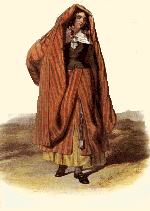
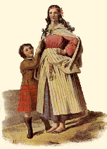
Reconstructing History's page on the Arisaid
Trews and Breeches:
Trews were worn in Scotland from the medieval period
through the end of the 18th century, usually by men
wealthy enough to own and/or ride horses. They are
descended either from early Celtic braccae/broc, or from
footed hose common throughout Europe in the middle ages
and worn elsewhere in the British Isles through the 17th
century for casual wear, or both. I'm inclined
toward the latter derivation, since the cut of Highland
trews is very much like the cut of footed hose.
Knee breeches were also worn in the Highlands, but
presumably were not remarked upon very often since they
weren't unusual. Three bodies have been found in
bogs in Caithness, Lewis, and the Shetlands from the late
1600s/early 1700s, and two are wearing knee breeches,
while one (a boy) is wearing a long coat that isn't
typical of the short coats we think of Highlanders
wearing during this period. He may have been
wearing linen breeches, but if he was, the acidity of the
bog has eaten them away since linen is a plant material,
leaving the protein fibers of his woolen garments
untouched.
Jackets/Coats:
Both men's and women's outerwear seems, as far as we can
tell from period portraits, to mirror that worn in
England at the time, with the exception of men's coats
when they are wearing the belted plaid, in which case
they are shorter than usual, reaching only the top of the
hip. This is a practical consideration, since it
would be impossible to wear a knee-length coat with a
belted plaid -- the skirts of the coat would interfere
with the belted plaid. Men also wore waistcoats
under their coats, either with sleeves or without sleeves
(waistcoats in this period often had sleeves, which could
be either sewn in, or tied on with lacing). Men
would NOT have worn their waistcoats alone without their
coats, unless they were engaged in hard physical labor.
Women in Scotland, as in England, seem to be wearing either a jacket like a feminized version of the man's jacket, or (by the mid-1700s) what is called a 'bedgown' -- a more shapeless, mid-hip to knee-length gown. It's possible that women also sometimes wore a sort of waistcoat (over their stays), with sleeves that tied on, like men's waistcoats. However, they did NOT wear these waistcoats as outer garments. Currently circulating in the 18th century reenactment community are two bodices called the 'French Bodice' and the 'English Bodice', which women sometimes wear alone without stays or a coat as their sole upper garment apart from the chemise. The cut of these bodices is loosely based on 18th century jumps and waistcoats, but is generally not accurate, and they certainly should not be worn alone, without stays. You'll never see anything like either of them in period illustrations.
Stays:
Women would have worn stays. Also worn at home
would have been lightly-boned stays called 'jumps,' worn
for very informal occasions such as during the
confinement after childbirth; they aren't considered
proper wear for public, however (there's a reference in a
poem from 1762 referring to a woman being one day 'a
shape in neat stays' and the next 'a slattern in jumps'
-- Waugh, 'Corsets and Crinolines', p. 65).
Research indicates that women in all strata of English
society, from milkmaids to princesses, wore stays, the
difference being in the cut and quality of the materials
(working women's stays were cut so as to be much easier
to move in than stays made for the rich). Working
women's stays were often of rough linen canvas or of
thick leather, which would be scored along the lines
where boning goes on a cloth corset; this scoring helps
the leather to bend properly around the torso. If
the stays were of cloth, the boning could be of materials
such as straw (like broom-straw), caning, or other cheap
and available stiffeners. Stays could also be
purchased secondhand. Contrary to popular opinion,
stays were not just worn as a fashion statement; they
were considered so essential to the proper dress of women
that charities and local governments responsible for the
welfare of indigent women and children provided them with
stays, which they would not have done if they were not
considered absolutely necessary. One writer
identifies prostitutes in London by (among other things)
their lack of stays; hence the origin of the term 'loose
woman'. A final reason for the wearing of stays is
the prevalence of rickets and other diseases causing
curvature of the spine -- stays were seen as one way of
keeping the body from becoming deformed due to illness.
A modern, practical consideration for wearing stays
is that they make great back support, especially when one
is working around camp, lifting heavy pots, firewood, and
other things. Properly constructed stays are
actually as comfortable as a modern underwire bra.
Country women did not consider their stays to be intimate garments -- in other words, they were not embarassed to be seen working in their stays. It's unlikely that they would have gone to church, or to the town fair, in their stays, any more than a man of the period would have been seen in only his waistcoat, but there are depictions of peasant women working in their stays and shift-sleeves. (See article on stays cited in bibliography)
Links:
16th
Century Stays -- included because you should be able
to draft your own stays pattern using the instructions on
this site. The late 16th century silhouette can be
adapted to later periods. This site also has very
useful information about how to make petticoats and other
articles of clothing.
17th
Century Stays -- this set of stays is from the late
1600s and is laced incorrectly in back. Stays were
laced with one lace.
18th Century Stays -- a working woman's corset would
have had wider armholes than the armholes on this
pattern, allowing for greater freedom of movement; a
fashionable woman's corset forced her shoulders back more
sharply.
Busk
from Philadelphia Museum of Art
Shift
Cutting Guide from the RevList files -- I think the
neckline ought to be more U-shaped, with wider corners at
the bottom matching the border of one's stays and stay
straps, but it's a good layout scheme.
Some notes on Women's
Clothing from the Battle Road Resources web page --
the information on pockets, stays, and petticoats is
applicable for 18th c. Scotland.
Bonnets:
The Highland bonnet does not seem to have been worn
earlier than 1600 CE; the Highlanders are invariably
described and depicted as bare-headed with long hair.
However, the bonnet seems to have gradually made its way
into the Highlands by the mid-to-late 1700s. It is
a direct descendant of the soft-crowned,
brimmed hat worn during the 16th century, which over
time lost its brim and became the Scottish bonnet we all
know today. There are other hats with similar or
identical shapes, including the Basque beret, (possibly)
the Monmouth cap worn by sailors throughout the middle
ages, and a beret-like hat worn by the very early Celts,
but apparently this shape died out in the Highlands and
was reintroduced.
Links:
Bonnet
& Cockade
Bonnet
Directions
Bonnet History from Roger's Rangers
Shoes:
It's hard to know exactly what they were wearing, apart from a few references. Here are a few possibilites, from Marc Carlson's Historic Footwear web site:
Ballyhagan
shoe (the 'gathered' type of pampootie)
Aran
Islands Pampootie (more like a ballet slipper)
Drummacoon
Bog Shoe
General Costuming Links:
Drea's
Elizabethan Costuming Page (no, not exactly the
time period discussed here, but fashions from the
previous century probably stuck around in the early to
mid 1600s in remote areas, and she has some good
descriptions for making basic articles of clothing).
Basic
clothing patterns can be purchased from James
Townsend & Co. and other suppliers.
Battle
Road Clothing & Accoutrements -- this is a page
for reenactors of the American Revolutionary War period,
but it has some good general 18th century clothing tips.
Timeline of Celtic Clothing (continued from previous page)
10) Gordon of Straloch. 1594 (Date of period described).
- Tartan plaid. ('Loose Cloke of several ells, striped and parti-color'd').
- Short linen shirt, which 'the great' sometimes dyed with saffron.
- Short jacket.
- Trews (in winter).
- Short hose (stockings) at other seasons.
- Raw leather shoes.
11) Lughaid O'Cleirigh. 1594.
Tartan plaid, fringed, with a belt over it. ('mottled cloaks of many colours')
12) John Taylor. 1618.
- Mantle 'of diverse colours', much finer and lighter stuffe than their hose'
- Stockings (short hose), of tartan.
- Jerkin of same material as hose.
- Blue caps (first mention of Highlanders wearing blue bonnets)
- Handkerchief with two knots around the neck.
13) Daniel Defoe. Writing in 1720, but (according to McClintock) working from authentic materials, describing the Highland part of the Scottish Army which invaded England in 1639.
- Cap or bonnet.
- Long, hanging sleeves.
- Doublet, trews, and short cloaks of tartan.
14) German Woodcut of Four Scottish Soldiers. 1641.
- Long coat to the knees, open in front, of tartan cloth, belted at waist.
- Belted plaid.
- Baggy knee breeches (probably in imitation of the baggy knee-breeches in style on the Continent).
- Flat bonnets.
- Tattered trews.
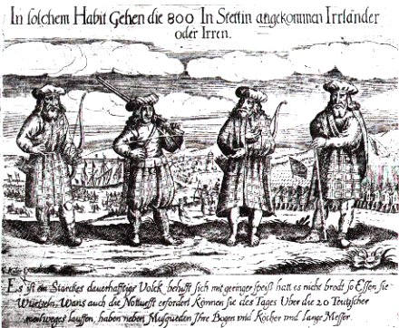
15) Heading in Blaeu's Map. 1643.
- Fig. 1: Belted plaid; tartan trews with garters.
- Fig. 2: Tartan jacket; trews without garters.
- Both have long hair and wide, flat bonnets.
16) William Cleland. 1678.
- Chiefs: trews and blue bonnets.
- Commoners: bare-legged; bare-headed.
- Slashed jackets (in the style of the times, letting the under-fabric show through).
- Clothes smeared with tar to protect from weather.
17) Governer Sacheverel. 1688.
- Plaid.
- Bare legs.
- Thin brogue; short buskin on the leg, tied with striped garters at calf.
- Sporran ('shot-pouch'), with dagger and pistol hung on either side.
- Blue bonnet.
18) Rev. James Brome. 1700. (McClintock, Old Highland Dress, p. 25)
- "mantles streaked or striped with diverse colours... with a coat girt close to their bodies."
- bare legs
- 'sandals' (probably currans)
- "their women go clad much after the same fashion"
19) Martin Martin. 1703.
- States that the 'leni' (as he calls the leine) fell into disuse in the Islands about a hundred years previously.
- Coat, waistcoat, breeches or trews of tartan.
- Bonnets of blue, black, or grey.
- Probable description of sporran.
- Belted plaid.
- Women's clothing: airisaidh, a white plaid with a few stripes of black, blue and red, with silver ring brooch, belted 'below the breast'. Belt decorated with silver and gemstones or coral. Sleeves of 'scarlet cloth, closed at the end as men's vest, with gold lace round 'em, having Plate buttons set with fine Stones.' Headdress -- a linen kerchief (kertch).
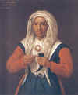 |
"The Hen Wife" by Richard Waitt (1706). Notice the headcovering, called a 'kertch' or 'breid', worn by Scottish married women in the 1600s and 1700s. The kertch appears to be worn on top of a close-fitting coif of some kind, held on with a brass pin at the crown of the head. She is holding a snuff horn and snuff spoon, and is wearing clothing very much like that worn in the early to middle part of the previous century -- probably in the style that was popular in her youth. She appears to be wearing a red gown, with a green wool doublet or close-fitting vest with 'wings' at the shoulders, and what might be a matching green wool apron. Her neck-covering definitely dates from the previous century. It is fastened with a brass ring-brooch, which women wore to fasten their clothing, especially arisaidhs. The colors in this picture are interesting -- a bright, though not scarlet, red, and a deep blue-green. |
20) London Observator, 1708.
- Slashed doublets.
- Belted plaid.
- Stockings to knee
- Trews of plaid
21) Mareshal Keith. 1715.
- Two short vests, one reaching to the waist, one six inches longer.
- Stockings to just below the knee.
- Belted plaid.
Below: 18th c. French engraving showing the belted plaid:
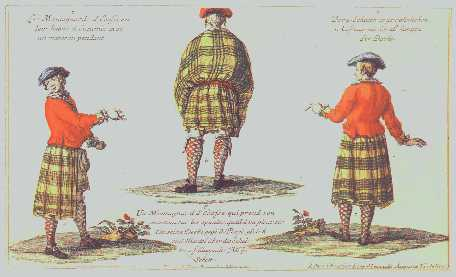
22) John Macky. 1723.
Highland Gentlemen (who had come on horseback):
- Trews.
- Short, slashed waistcoats.
- Plaid (worn as cloak).
- Blue bonnet.
Attendants:
- Belted plaid.
- Stockings to the knee.
Highland army in Flanders, 1743:
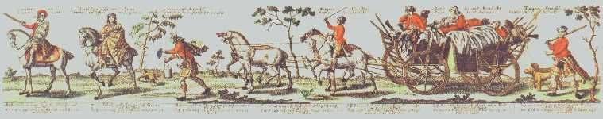
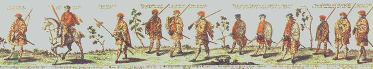
23) Burt's Letters. ca. 1730.
- Bonnet.
- Short coat.
- Waistcoat.
- Stockings to mid-calf.
- Brogues or currans, with holes cut in them to let the water out.
- Trews - worn mostly by upper class.
- Belted plaid.
- Women: Plaid of fine worsted or silk, three yards long.
'Incident in The Battle of Culloden, by David Morier -- Jacobite prisoners were used as models:
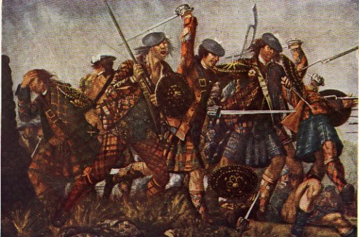
Details from David Allan's painting, 'A Highland Wedding at Blair Atholl', painted in the 1780, and some other paintings by David Allan (click on images to see larger versions):
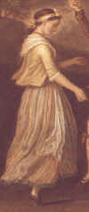 |
This
young girl (possibly the bride, since she's in
the middle of the picture) is wearing a blue
petticoat with a striped petticoat on top, or
possibly a striped petticoat with a blue binding
at the lower hem -- a popular way of making a
petticoat last longer when the hem started to
fray, an apron, a light yellow jacket, a white
neckerchief, and shoes. She is also wearing a band of cloth around her head (called by English commentators a 'fillet') and a necklace of red beads. |
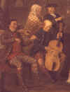 |
The men
in this portion of the painting are wearing coats
and waistcoats very much like the ones worn in
the rest of England during the late 1800s --
their coats are more cut away in the front,
whereas earlier in the century their coats would
have been able to button up. He is also
wearing separate knee-breeches and hose, rather
than one-piece trews. The woman in the illustration is wearing a checked or striped arisaidh over her head. |
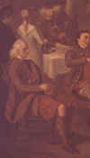 |
The man
in the foreground is either wearing the great
kilt or a kilt and shoulder plaid -- most likely
the former, since the other parts of his dress
are older in style: a coat that buttons up, and
an earlier style of cuffs. The girl in the background is wearing a blue gown, a white neckerchief, and has her hair in a ponytail. |
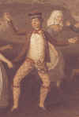 |
This
brave lad (possibly the groom) is wearing the
short waistcoat common at the end of the 18th
century and a cutaway jacket. His trews
seem to be cut of the same material used in other
contexts for stockings. He has nicely tied
red garters below his knees, and he is wearing a
red handkerchief (possibly patterned) around his
neck, and a late-18th c. form of the highland
bonnet. This checkerboard pattern does not
appear on bonnets from the Uprising of 1745/46. The woman in the background is wearing a light blue jacket or shortgown, an apron, a striped petticoat with red trim at the bottom, a red-on-yellow patterned neckerchief, and a married woman's kertch, fastened under her chin, which seems to be the fashion in this period. She is wearing shoes with buckles. |
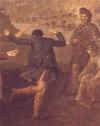 |
The dancer in the foreground is wearing the feilebeg, or small kilt, and a short blue jacket. The observer in the background is wearing a late 18th c. bonnet, possibly a feilebeg, and a shoulder plaid of a different pattern. The young woman at the right, tying the garters on her stockings, is wearing a red fillet, possibly a peach jacket, and blue garters. It's hard to make out what color her petticoat is. |
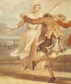 |
Detail,
David Allan's "Highland Dance", 1780: This married woman is wearing the kertch fastened under her chin, a red-and-white striped petticoat, an apron, white stockings, shoes, and a pink or white jacket of some kind -- the details are obscured by the arm of the man in the picture. The man is in a medium brown jacket and short kilt. |
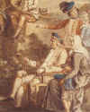 |
More
people from the "Highland Dance"
painting: The old man is wearing trews, gartered at the knee, a light-brown coat and a white waistcoat, and the newer style of bonnet with a checkered edge. The seated woman is wearing the kertch, a short jacket or shortgown, and a petticoat, both colored a grey-brown.. The young woman in the background is wearing a light blue jacket and white neckerchief. She doesn't appear to be wearing a fillet. |
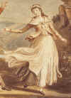 |
Another
girl from the "Highland Dance": She is wearing a white petticoat with thin blue stripes, an apron, a tobacco brown shortgown or jacket, a neckerchief, possibly fastened with a round brooch, and what is probably a vest. |
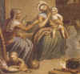 |
Detail
from David Allan's "Scottish Highland Family": The old woman wears a striped shortgown, a white neckerchief, striped kertch over a white coif, striped petticoat, and checked apron. Her granddaughter wears a checked petticoat (or two), striped shortgown with short sleeves, blue neckerchief with red and white border, and a fashionable cap with ruffle and pink bow. She is barefoot. Notice the goat (foreground) and cow (background) inside the cottage. |
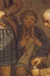 |
A great detail from the "Highland Family" painting -- a man sitting in the background knitting stockings! |
| Detail from an engraving by Thomas Pennant, "Women at the Quern." This shows two women using a quern, or hand mill, to grind grain. You can see the petticoats, jackets or shortgowns, and checked neckerchiefs worn by the two women, and what appears to be a ring brooch fastening the neckerchief of the woman facing the viewer. She is also wearing a cap like those common elsewhere in Britain at this time, while the girl wears her hair in a ponytail with a fillet. | 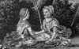 |
| Detail from above engraving, showing women waulking (fulling) cloth. Striped or checked fabric for petticoats, jackets and neckerchiefs seems very popular. The married women in this drawing appear to all be wearing caps, rather than the kertch, but the unmarried women are wearing their hair bound by fillets in various styles. The nearest one has twisted her ponytail up and stuck it into her fillet at the top of her head. She might be wearing a jacket rather than a shortgown; it's hard to tell. Several women appear to be wearing ring brooches. | 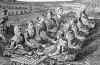 |
Some Lowlanders at the end of the 18th century:
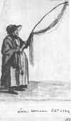 |
This is "The Edinburgh Lacewoman" by David Allan, drawn in 1784. She is wearing a quilted petticoat, a checked apron, a shawl, a cap, and a bonnet, probably black wool or taffeta. |
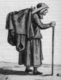 |
David Allan, "The Edinburgh Salt Vendor, ca. 1788. She is wearing a petticoat (or several), shortgown, and hood, and carries the salt on her back in a creel, covered with cloth for protection. |
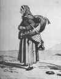 |
David Allan, "The Edinburgh Fishwife", ca. 1788. She is wearing a striped petticoat, possibly over another petticoat, another striped petticoat pinned back, shoes with buckles, a bedgown, a neckerchief, a white coif, and a spotted scarf on her head. She carries her fish in a creel on her back, and more fish or shellfish in a basket over her arm. |
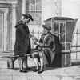 |
David Allan, "Edinburgh Sedan Chairmen", ca. 1788. The one on the left wears checked hose, like those seen on contemporary Highlanders, along with an overcoat and black felt hat; the one on the right wears knee breeches and white stockings, but sports a blue bonnet. |
Go to Stewarts of Appin
Copyright Notice:
The Author of this work retains full copyright for this material. Permission is granted to make and distribute verbatim copies of this document for non-commercial private research purposes provided the copyright notice and this permission notice are preserved on all copies.
Clothing of the Ancient Celts / Clothing in the Scottish Highlands, 1100-1700 CE - Copyright 1997, M. E. Riley

{kind=link}
{kind=link}
{kind=link}
{kind=link}
{kind=link}
{kind=link}
{kind=link}
{kind=link}
{kind=link}
{kind=link}
{kind=link}
{kind=link}
{kind=link}
{kind=link}
{kind=link}
{kind=link}
{kind=link}
{kind=link}
{kind=link}